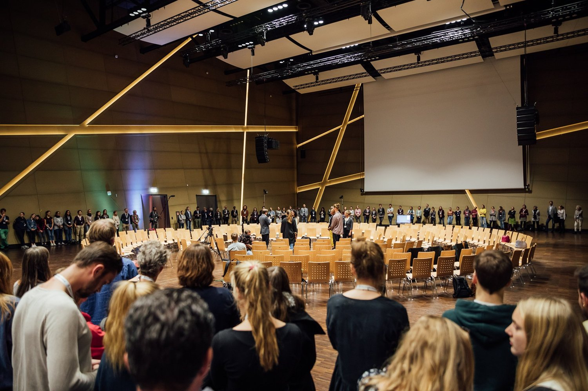
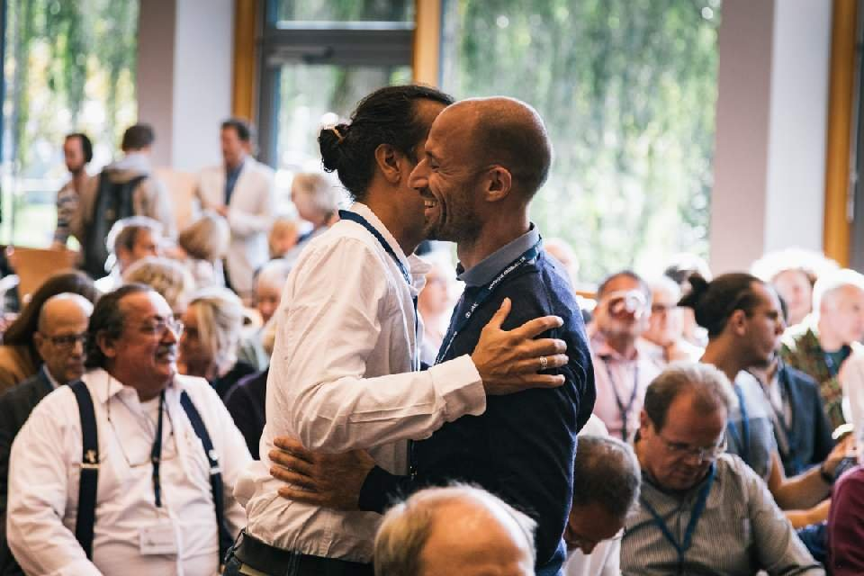
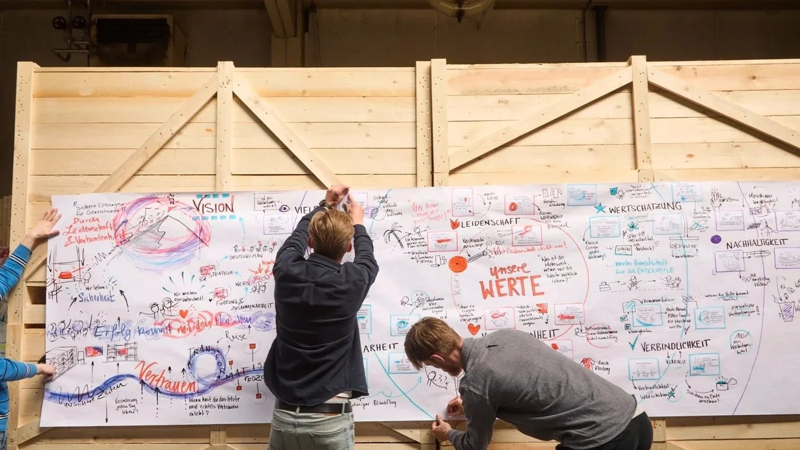

Stell dir vor, wirklich alle Menschen wirken zusammen
Art of Hosting & Dialog Facilitation: wenn aus Veranstaltungen Momente der Begegnung werden.


Wenn aus Events Erlebnisse werden
Keine endlosen Präsentationen. Keine Alibi-Diskussionen. Keine stillen Teilnehmer, die innerlich längst abschalten.
Stattdessen: Menschen, die gemeinsam sich auf Augenhöhe begegnen.
Die introvertierte Analytikerin teilt ihre entscheidende Einsicht. Der skeptische Controller wird zum engagierten Mitgestalter. Aus „deren Problem“ wird „unser Projekt“.
Das ist Dialog-Facilitation. Und das ist meine Leidenschaft.
Wie ich eure Veranstaltung transformiere
Seit 8 Jahren verwandle ich Veranstaltungen in Räume, wo kollektive Intelligenz erwacht. Mein Ansatz ist: Ich glaube, dass ihr die Antworten bereits habt. Meine Aufgabe ist es, den Rahmen zu schaffen, in dem diese Antworten sichtbar werden.
Vor eurer Veranstaltung
Ich führe Gespräche – mit dir, mit Schlüsselpersonen, mit kritischen Stimmen. Ich will verstehen, worum es wirklich geht. Dann entwickle ich das perfekte Format für eure spezielle Situation.
Während der Veranstaltung
Ich schaffe Strukturen, in denen alle zu Wort kommen. Kleine Gruppen, in denen Vertrauen entsteht. Große Runden, in denen Energie spürbar wird. Methoden, die zu euch passen.
Nach der Veranstaltung
Die Energie bleibt. Durch visuelle Dokumentation, die die Essenz einfängt. Durch klare nächste Schritte. Durch eine neue Art des Miteinanders, die in den Alltag übergeht.
Haltung und Methoden, die den Unterschied machen
Ich arbeite mit Methoden, die Menschen ins Gespräch bringen, Vertrauen fördern und kreative Lösungen sichtbar machen. World Café, Open Space und Fishbowl-Dialoge aktivieren Beteiligung und kollektive Intelligenz. Dazu kommen innovative Formate wie interaktive Galerien, kreative Schreibübungen, Bewegung und Tanz, die Embodiment in den Prozess bringen. Auch Social Presencing Theater und Aufstellungsarbeit eröffnen neue Perspektiven und machen innere Dynamiken erlebbar. Meditation und Phasen der Stille schaffen Klarheit und Raum für innere Führung.
Menschen brauchen Vertrauen und Sicherheit, um sich zu öffnen, ihre Stimme einzubringen und echte Begegnung zu erleben. Deshalb kombiniere ich Kleingruppenarbeit und Großgruppenformate mit einem klaren Fokus auf tiefem Zuhören. Viele Formate entstehen co-kreativ im Eventdesign – inspiriert von Art of Hosting, Theory U und vielen weiteren Schulen.

Der Moment, wenn alles kippt
Es gibt diesen magischen Moment in jeder Veranstaltung. Plötzlich spüren alle: Hier entsteht gerade etwas. Die Energie im Raum verändert sich. Menschen lehnen sich vor statt zurück. Aus Zuhörern werden Mitgestalter.
Entscheidungen, die alle mittragen
… weil alle mitgedacht haben.
Verbindungen quer durch die Organisation
Das bleibt.
Eine neue Gesprächskultur
Das bleibt.
Die Erfahrung: Wir können mehr, als wir dachten
Das bleibt.
Das Geheimnis nachhaltiger Workshops
Die meisten Facilitatoren moderieren und gehen. Ich ernte.
Die Ernte
Wie ein Landwirt plane ich von Anfang an, was wir ernten wollen. Schon vor dem Workshop frage ich:
- Welche Erkenntnisse müssen sichtbar bleiben?
- Welche Energie soll in den Alltag fließen?
- Welche Entscheidungen brauchen Verbindlichkeit?
Das Ergebnis: Eure wichtigsten Durchbrüche verschwinden nicht im Protokoll, sondern werden zu lebendigen Ankerpunkten eurer gemeinsamen Reise.
Die vier Ebenen der Ernte
- Sichtbare Ernte: Visuelle Landkarten und Dokumentationen, die an der Wand hängen
- Spürbare Ernte: Die Energie und Verbindung, die in der Organisation bleibt
- Individuelle Ernte: Was jeder Einzelne für sich mitnimmt und umsetzt
- Kollektive Ernte: Was die Organisation als Ganzes gewinnt und verändert
Fragen, die du dir stellen könntest
Was ist der Unterschied zwischen Moderation und Facilitation?
Moderation bedeutet, ein vorbereitetes Programm durchzuführen. Facilitation heißt dagegen „erleichtern“ (vom Latein facilitare): Ich öffne Räume für echte Gespräche, entwickle ein Prozessdesign und arbeite mit interaktiven Methoden. Ich bin kein klassischer Moderator für Podiumsdiskussionen, sondern Gestalter von Dialogräumen.
Was kostet eine Begleitung?
Ich arbeite in der Regel mit Tagessätzen. Jedes Projekt ist individuell – nach einem ersten Gespräch erhältst du ein maßgeschneidertes Angebot, passend zu deinem Kontext und Umfang.
Mit wie vielen Leuten arbeitest du?
Von kleinen Teams mit 3–5 Personen über Workshops mit 15–30 bis hin zu Großgruppen mit 100–300 Teilnehmenden. Je größer die Gruppe, desto wichtiger sind Vorbereitung, Prozessdesign und eine klare Organisation.
Lass uns über deine Veranstaltung sprechen
Dein nächster Workshop oder deine nächste Veranstaltung steht an. Du spürst: Es könnte mehr daraus werden als die übliche Routine. 45 Minuten. Kostenfrei. Klarheit.